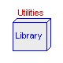
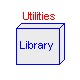

This package contains multibody models with kinematic loops
Use the following settings: experiment StopTime=0.2 Interval=0.002 Tolerance=1.E-8 Perform 'simulate' and then see animation in Animation window. Plot the following variables: AngVelDegS: Angular velocity of motor shaft [rev/min] x : position of cylinder [m] press : pressure in cylinder [bar]
| Name | Default | Description |
|---|---|---|
| D | 0.1 | |
| e | 0.05 | |
| L | 0.2 | |
| Load | 20 |
encapsulated model Engine1
import ModelicaAdditions.MultiBody.CutJoints;
import ModelicaAdditions.MultiBody.Parts;
import ModelicaAdditions.MultiBody.Examples.Loops.Utilities;
extends Utilities.Engine;
Parts.ShapeBody rodBody(
r={L,0,0},
rCM={L/2,0,0},
m=0.5,
I33=0.0018,
Width=0.02,
Height=0.01);
CutJoints.ConnectingRod2 rod(
L=L,
na={0,0,1},
r_rela(start={-0.2,0,0}, each fixed=false));
equation
connect(crank.frame_b, rod.frame_b);
connect(rod.frame_a, cyl.frame_b);
connect(rod.frame_c, rodBody.frame_a);
end Engine1;

Use the following settings: experiment StopTime=0.2 Interval=0.002 Tolerance=1.E-8 Perform 'simulate' and then see animation in Animation window. Plot the following variables: AngVelDegS: Angular velocity of motor shaft [rev/min] x : position of cylinder [m] press : pressure in cylinder [bar]
| Name | Default | Description |
|---|---|---|
| D | 0.1 | |
| e | 0.05 | |
| L | 0.2 | |
| Load | 20 |
encapsulated model Engine2
import ModelicaAdditions.MultiBody.CutJoints;
import ModelicaAdditions.MultiBody.Joints;
import ModelicaAdditions.MultiBody.Parts;
import ModelicaAdditions.MultiBody.Examples.Loops.Utilities;
extends Utilities.Engine;
CutJoints.Spherical spherical;
Parts.ShapeBody connectingRod(
r={-L,0,0},
rCM={-L/2,0,0},
m=0.5,
I33=0.0018,
Width=0.02,
Height=0.01);
Joints.Universal univ(nx={0,0,1}, ny={0,1,0});
equation
connect(crank.frame_b, spherical.frame_a);
connect(spherical.frame_b, connectingRod.frame_b);
connect(cyl.frame_b, univ.frame_a);
connect(univ.frame_b, connectingRod.frame_a);
end Engine2;
Simulate for 1 second (100 output points)
| Name | Default | Description |
|---|---|---|
| L | (sqrt(1 + 0.3*0.3 + 0.1*0.1)) | Length of connecting rod [m] |
encapsulated model Fourbar1
import Modelica.Icons;
import ModelicaAdditions.MultiBody.CutJoints;
import ModelicaAdditions.MultiBody.Joints;
import ModelicaAdditions.MultiBody.Parts;
import SI = Modelica.SIunits;
extends Icons.Example;
parameter SI.Length L=(sqrt(1 + 0.3*0.3 + 0.1*0.1)) "Length of connecting rod";
output SI.Angle j1q "angle of revolute joint j1";
output SI.Position j2q "distance of prismatic joint j2";
output SI.AngularVelocity j1qd "axis speed of revolute joint j1";
output SI.Velocity j2qd "axis velocity of prismatic joint j2";
Parts.InertialSystem inertial;
Joints.Revolute j1(
n={1,0,0},
qd(start=20),
startValueFixed=true);
Joints.Prismatic j2(n={1,0,0});
Parts.CylinderBody b1(r={0,0.5,0.1}, Radius=0.05);
Parts.CylinderBody b2(r={0,0.2,0}, Radius=0.05);
Parts.BoxBody b0(
r={1,0,0},
Width=0.01,
Height=0.01,
Material={0,0,1,0.5});
Parts.CylinderBody b3(r={L,0,0}, Radius=0.05);
CutJoints.ConnectingRod2 barC(L=L, na={0,1,0});
equation
connect(inertial.frame_b, b0.frame_a);
connect(b0.frame_b, j2.frame_a);
connect(j2.frame_b, b2.frame_a);
connect(j1.frame_b, b1.frame_a);
connect(j1.frame_a, inertial.frame_b);
connect(b1.frame_b, barC.frame_b);
connect(barC.frame_a, b2.frame_b);
connect(b3.frame_a, barC.frame_c);
j1q = j1.q;
j2q = j2.q;
j1qd = j1.qd;
j2qd = j2.qd;
end Fourbar1;

Simulate for 1 second (100 output points)
encapsulated model Fourbar2
import Modelica.Icons;
import ModelicaAdditions.MultiBody.CutJoints;
import ModelicaAdditions.MultiBody.Joints;
import ModelicaAdditions.MultiBody.Parts;
import SI = Modelica.SIunits;
extends Icons.Example;
output SI.Angle j1q "angle of revolute joint j1";
output SI.Position j2q "distance of prismatic joint j2";
output SI.AngularVelocity j1qd "axis speed of revolute joint j1";
output SI.Velocity j2qd "axis velocity of prismatic joint j2";
Parts.InertialSystem inertial;
Joints.Revolute j1(
n={1,0,0},
qd(start=20),
startValueFixed=true);
Joints.Prismatic j2(n={1,0,0});
Parts.CylinderBody b1(r={0,0.5,0.1}, Radius=0.05);
Parts.CylinderBody b2(r={0,0.2,0}, Radius=0.05);
Parts.BoxBody b0(
r={1,0,0},
Width=0.01,
Height=0.01,
Material={0,0,1,0.5});
CutJoints.Spherical sphereC;
Parts.CylinderBody b3(
r={-1,0.3,0.1},
Radius=0.05,
Material={0,1,0,0.5});
Joints.Revolute rev(n={0,1,0});
Joints.Revolute rev1;
equation
connect(inertial.frame_b, b0.frame_a);
connect(b0.frame_b, j2.frame_a);
connect(j2.frame_b, b2.frame_a);
connect(b1.frame_b, sphereC.frame_a);
connect(j1.frame_b, b1.frame_a);
connect(rev.frame_a, b2.frame_b);
connect(rev.frame_b, rev1.frame_a);
connect(b3.frame_b, sphereC.frame_b);
connect(rev1.frame_b, b3.frame_a);
connect(inertial.frame_b, j1.frame_a);
j1q = j1.q;
j2q = j2.q;
j1qd = j1.qd;
j2qd = j2.qd;
end Fourbar2;
ModelicaAdditions.MultiBody.Examples.Loops.TwoLoopUse experiment StopTime=1.6 NumberOfIntervals=200 Perform 'simulate' and then see animation in Animation window. plot j1.q and j1.qd
encapsulated model TwoLoop
import Modelica.Mechanics.Rotational;
import Modelica.Blocks.Sources;
import ModelicaAdditions.MultiBody.CutJoints;
import ModelicaAdditions.MultiBody.Joints;
import ModelicaAdditions.MultiBody.Parts;
Parts.InertialSystem inertial;
Joints.Revolute j1(n={0,0,1}, startValueFixed=true);
Parts.CylinderBody b1(r={0.1,0.5,-0.5}, Radius=0.02);
CutJoints.ConnectingRod2 j2(L=1.1, na={1,0,0});
Parts.CylinderBody b2(
r={1.1,0,0},
Radius=0.02,
Material={0,1,0,0.5});
Parts.ShapeBody b3(
r={-0.2,0,0},
Width=0.04,
Height=0.04,
Material={0,0,1,0.5});
Joints.Prismatic j3(n={1,0,0});
Parts.ShapeBody b5(
r={1.8,0,0},
Width=0.02,
Height=0.02,
Material={0.5,0.5,0.5,0.5});
Parts.CylinderBody b6(r={0,-0.3,0}, Radius=0.03);
Joints.Prismatic j5(n={0,0,1}, qq(start=-0.5, fixed=false));
Parts.ShapeBody b7(
r={0,0,-0.3},
Width=0.03,
Height=0.03,
Material={0,1,0,0.5});
CutJoints.Spherical j4;
Joints.Revolute j6(n={-1,0,0});
Joints.Revolute j7(n={0,1,0});
Parts.ShapeBody b4(
r={0,0,0.5},
Width=0.02,
Height=0.02,
Material={0.5,0.5,0.5,0.5});
Parts.Shape shape(
LengthDirection={0,0,0.4},
Width=0.02,
Height=0.02);
Parts.FrameAxes frame(nx={1,-1,1});
Rotational.Torque torque;
Rotational.IdealGear gear(ratio=10);
Rotational.Inertia shaft(J=0.5);
Sources.Constant constIn(k={10});
Parts.FrameTranslation b8(r={-0.8,0,0});
equation
connect(b1.frame_a, j1.frame_b);
connect(j2.frame_c, b2.frame_a);
connect(b1.frame_b, j2.frame_a);
connect(b5.frame_b, j3.frame_a);
connect(b6.frame_b, j4.frame_b);
connect(j5.frame_b, b6.frame_a);
connect(b7.frame_b, j5.frame_a);
connect(j6.frame_b, b7.frame_a);
connect(j7.frame_b, j6.frame_a);
connect(b5.frame_b, b4.frame_a);
connect(b4.frame_b, j7.frame_a);
connect(inertial.frame_b, frame.frame_a);
connect(constIn.outPort, torque.inPort);
connect(torque.flange_b, gear.flange_a);
connect(gear.flange_b, shaft.flange_a);
connect(shaft.flange_b, j1.axis);
connect(j3.frame_b, j4.frame_a);
connect(j3.frame_b, b3.frame_a);
connect(b3.frame_b, j2.frame_b);
connect(frame.frame_b, b8.frame_a);
connect(b8.frame_b, b5.frame_a);
connect(b8.frame_b, j1.frame_a);
connect(j5.frame_b, shape.frame_a);
end TwoLoop;